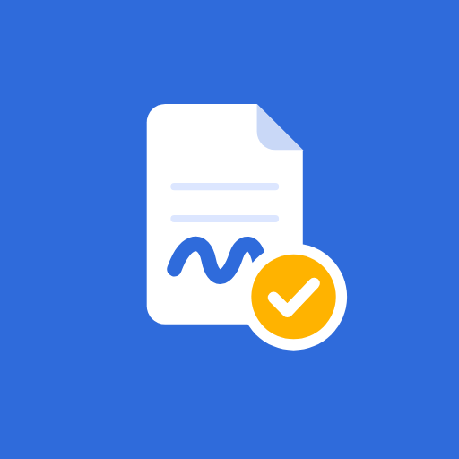

Noteapp
Privacy policy
Privacy policy
Effective 17 November 2026 · updated 19 November 2026 (handwriting search)
What Noteapp stores on your device
- Your notebooks, handwriting, text, pictures and imported PDFs, folders, tasks and settings.
- These stay in Noteapp's private storage on your device. Other apps can't read them.
- Uninstalling Noteapp or clearing its data deletes them from the device. Back up first if you want to keep them.
Canvas
- If you sign in to your school's Canvas, you do it on your school's own Canvas sign-in page inside Noteapp. Noteapp never sees your password.
- The sign-in session stays on your device. It is used only to read your courses and assignments from your school's Canvas, and Noteapp never changes anything in Canvas.
- The session is never sent anywhere else, and never included in any backup or export.
Google Drive
Connecting Google Drive is optional. If you connect it:
-
Noteapp asks only for permission to "see, edit, create, and delete only the specific Google
Drive files you use with this app" (
drive.file). It can't see any other files in your Drive. -
It creates a folder called Noteapp in your Drive, holding three things:
- the backup of your notes, folders, tasks and settings
- readable PDF copies of your notebooks
- temporary copies of Word or PowerPoint files you ask it to turn into PDFs, deleted as soon as the PDF is made
- Noteapp keeps your Google account's email address on your device, to show which account it backs up to. Google Play services handles the sign-in. Noteapp never stores your Google password.
- Your Canvas sign-in is never put in Google Drive.
Noteapp's use and transfer of information received from Google APIs adheres to the Google API Services User Data Policy, including the Limited Use requirements. Data from Google Drive is used only to back up and restore your notes, make the PDF copies and convert files you choose. It isn't used for anything else, isn't shared with anyone, and isn't used for advertising.
Other permissions
- Photos: if you allow it, Noteapp shows your recent photos so you can pick one for a page. Only the pictures you choose are copied into Noteapp, and your photos are never changed or sent anywhere.
- Notifications: reminders for your tasks are created on the device.
- Screen capture: only when you use the screenshot tool, after Android asks you. The picture stays on your device.
- Handwriting search: so you can search your handwriting, Noteapp reads it as text using Google's ML Kit handwriting recognition, which runs on your device: your writing is never sent anywhere. The first time, ML Kit downloads its English handwriting model (about 20 MB) from Google, on Wi-Fi only.
Sharing
Noteapp doesn't sell, rent or share your information with anyone. Information leaves your device only where you send it: to your school's Canvas (to read assignments), to your Google Drive (if you connect it), or to another app when you choose to share or export something.
Deleting your data
- In Noteapp, Settings → Backup → Disconnect stops backups to Google Drive and takes back Noteapp's permission.
- You can also remove Noteapp's access at myaccount.google.com/permissions.
- To delete the backup itself, delete the Noteapp folder in your Google Drive.
- Notes on the device are deleted when you delete them in Noteapp (after 30 days in Recently deleted), clear Noteapp's data, or uninstall it.
Children
Noteapp is made for students and isn't directed at children under 13.
Changes
If this policy changes, the new version will be posted on this page with a new effective date.
Contact
Questions about privacy: open an issue on GitHub.